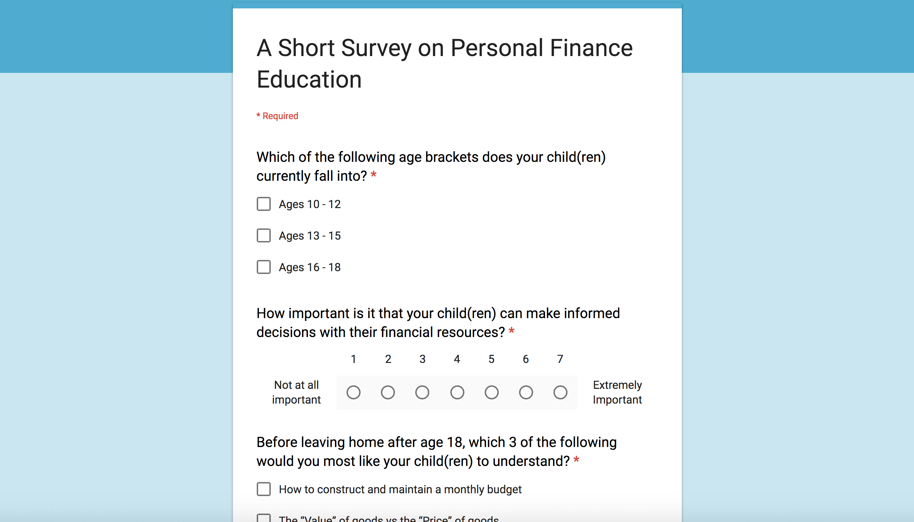
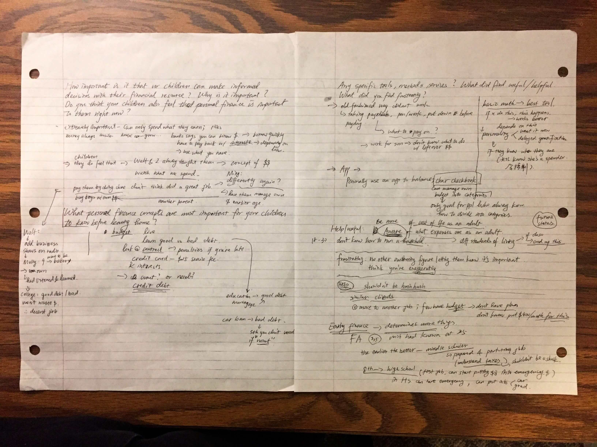

We started the project having a vague idea that we hope to help young Americans learn more about personal finance. Initially, we hoped to help parents better educate their children about personal finance. However, we pivoted based on our primary and secondary research, and focused on helping emerging adults aged between 18 and 25 form better financial habits.
Literature Review
"Research shows that young American adults don't have adequate knowledge in personal finance, and need better guidance on managing their financial resources."
— Manton et al. (2011)
To understand the current problems young Americans are facing while learning about personal finance, we looked into the research literature. While most studies focused on evaluating the success of personal finance education curriculum in schools, data show that most young adults actually turn to their parents for advice when facing financial decision problems. The results motivated us to focus on parents in our following surveys and interviews to learn about their barriers when it comes to educating their children about personal finance.
Competitive Analysis
We also investigated the existing solutions used by parents who consider it significant to educate their children about financial literacy. We analyzed three products including an interactive website and two highly ranked education apps from the iOS App Store/Google Play Store.
Pennybox: The app enables children to complete chores and collect money from parents into their Pennybox account. Children can then track how much they have saved, spent, and how much more they can earn. Children can also request a cash out. The tool is great for younger children to learn about what it means to earn and save money through working; however, these concepts are too basic for teenagers who will soon need to manage a household and face real-world financial problems.
The Mint: The website provides learning materials for younger children, teenagers, parents and teachers on a variety of topics including earning, saving, owing, and investing. It provides quizzes and interactive games to teach basic financial concepts and gives children/teens hands-on practice in the virtual environment. However, the website is text-heavy and mostly non-interactive; the games only enable children/teens to practice basic activities like how to write a check, which are not interesting enough to keep them motivated.
PiggyBot: The app introduces children to the concept that managing money should have three parts: spending, sharing with others, and saving. It lets children set goals and take photos of those goals; it then shows them weekly how they are doing in terms of reaching their goals. This app permits parents to set up profiles for multiple children and keep all the records in one place. However, like Pennybox, the app can be over-childish for teenagers and cannot be used to educate them about more complicated financial concepts.
Through competitive analysis, we discovered that most of the existing products are either interactive but simple, which work fine only with younger children, or informative but static, which can hardly draw children's or teenagers' interests. Few products target late adolescents, who are not yet motivated to learn about complicated financial concepts, but will soon need them as they start working or enter college. Therefore, we decided to narrow our user group down to late adolescents.
Surveys
Because of our limited timeframe, we decided to deploy a survey as the first step of our primary research, because it is the fastest way to get a wide range of responses. Based on the findings from the literature review, we chose parents of teenage children as our participants. We hoped to understand what financial concepts parents hope their children learn before leaving home, whether they have attempted to educate their children about these concepts, and whether the process has been successful.

Our main findings from the surveys are as follows: (observations here regarding "children" apply to teenage children and young adults)
- Budgeting, staying out of debt, and price vs. value (knowing the difference between the value and the price of something) are the top three concepts that parents want their children to learn before leaving home.
- Managing one's own financial resources seems to be a distant topic for children before college.
- Children usually lack interests in learning about financial knowledge.
- Children in their early adolescence cannot understand certain personal finance knowledge.
- Parents lack tools in educating their children about personal finance.
These results lead us to design tools that will:
- Motivate children to learn about concepts that parents believe are the most important: budgeting, staying out of debt, and price vs. value.
- Bring distant financial concepts closer to children to stimulate their interests in personal finance.
Interviews & Affinity Mapping
We conducted several semi-structured interviews with parents and financial experts to dive deeper into the problems parents encounter when educating their children about personal finance and gain advice from experts.
We created an affinity map as a group to identify themes from our qualitative interview data.

The main findings from the interviews include:
- Parents usually teach their children about personal finance through practical methods, like opening bank accounts for their children and letting them manage financial resources. These methods are considered effective. Some of the parents share financial knowledge during casual daily conversation too.
- Lots of parents mentioned that there is not enough tools for them to teach their children about personal finance.
- Some parents consider themselves inadequate in financial literacy and thus cannot really educate their children effectively.

In addition, our interviews with financial experts gave us some new insights that we were not aware of before:
- Not only teenagers, but also adults in their early 20s do not typically know how to manage their own financial resources.
- Making a detailed budget plan and sticking to it (similar to a diet plan) is essential. However, most people, even adults, only have a vague idea about their financial own status.
- It is important to make distant financial concepts concrete for children in order for them to know their importance.
- Pre-college teenagers usually do not understand the importance of financial literacy when they are around their parents; once they enter college and start facing real-world financial decisions, they realize the importance of learning personal finance knowledge, but they no longer have enough chance/motivation to ask their parents about the topic.
Based on the survey & interview results, we realized that both pre-college teenagers and emerging adults aged between 18 and 25 have the need to learn to better manage their financial resources. Since we cannot narrow down our user group based on our evidence, instead of arbitrarily deciding on a group to focus on, we delineated the different needs for pre-college teenagers and emerging adults, and brainstormed ideas for both.